DRUG RECEPTORS & PHARMACODYNAMI CS
Therapeutic and toxic effects of drugs result from their interactions with molecules in the patient. Most drugs ac by associating with specific macromolecules in ways that alter the macromolecules' biochemical or biophysical activities. This idea, more than a century old, is embodied in the term receptor: the component of a cell or organism that interacts with a drug and initiates the chain of events leading to the drug's observed effects.
Receptors have become the central focus of investigation of drug effects and their mechanisms of action (pharmacodynamics). The receptor concept, extended to endocrinology, immunology, and molecular biology, h. proved essential for explaining many aspects of biologic regulation. Many drug receptors have been isolated an characterized in detail, thus opening the way to precise understanding of the molecular basis of drug action.
The receptor concept has important practical consequences for the development of drugs and for arriving at therapeutic decisions in clinical practice. These consequences form the basis for understanding the actions and clinical uses of drugs described in almost every chapter of this book. They may be briefly summarized as follow:
- (1) Receptors largely determine the quantitative relations between dose or concentration of drug a pharmacologic effects. The receptor's affinity for binding a drug determines the concentration of drug require to form a significant number of drug-receptor complexes, and the total number of receptors may limit the maximal effect a drug may produce.
- (2) Receptors are responsible for selectivity of drug action. The molecular size, shape, and electrical charge of a drug determine whether—and with what affinity—it will bind to a particular receptor among the vasi array of chemically different binding sites available in a cell, tissue, or patient. Accordingly, changes in the chemical structure of a drug can dramatically increase or decrease a new drug's affinities for different classes o receptors, with resulting alterations in therapeutic and toxic effects.
- (3) Receptors mediate the actions of both pharmacologic agonists and antagonists. Some drugs and many natural ligands, such as hormones and neurotransmitters, regulate the function of receptor macromolecu as agonists; ie, they activate the receptor to signal as a direct result of binding to it. Some agonists activate a single kind of receptor to produce all of their biologic functions, whereas others selectively promote one receptc function more than another.
Other drugs act as pharmacologic antagonists; ie, they bind to receptors but do not activate generation of a signal; consequently, they interfere with the ability of an agonist to activate the receptor. The effect of a so-call "pure" antagonist on a cell or in a patient depends entirely on its preventing the binding of agonist molecules ar blocking their biologic actions. Other antagonists, in addition to preventing agonist binding, suppress the basal signaling ("constitutive") activity of receptors. Some of the most useful drugs in clinical medicine are pharmacologic antagonists.
MACROMOLECULAR NATURE OF DRUG RECEPTORS
Most receptors are proteins, presumably because the structures of polypeptides provide both the necessary diversity and the necessary specificity of shape and electrical charge. Receptors vary greatly in structure and ce be identified in many ways. Traditionally, drug binding was used to identify or purify receptors from tissue extracts; consequently, receptors were discovered more recently than the drugs that bind to them. However, advances in molecular biology and genome sequencing have begun to reverse this order. Now receptors are be discovered by predicted structure or sequence homology to other (known) receptors, and drugs that bind to the are developed later using chemical screening methods. This effort has revealed, for many known drugs, a large diversity of receptors than previously anticipated. It has also identified a number of "orphan" receptors, so-call because their ligands are presently unknown, which may prove to be useful targets for the development of new drugs.
The best-characterized drug receptors are regulatory proteins, which mediate the actions of endogenous chemical signals such as neurotransmitters, autacoids, and hormones. This class of receptors mediates the effe of many of the most useful therapeutic agents. The molecular structures and biochemical mechanisms of these regulatory receptors are described in a later section entitled Signaling Mechanisms & Drug Action.
Other classes of proteins that have been clearly identified as drug receptors include enzymes, which may be inhibited (or, less commonly, activated) by binding a drug (eg, dihydrofolate reductase, the receptor for the antineoplastic drug methotrexate); transport proteins (eg, $\mathrm{Na}^{+} / \mathrm{K}^{+}$ATPase, the membrane receptor for cardioactive digitalis glycosides); and structural proteins (eg, tubulin, the receptor for colchicine, an antiinflammatory agent).
This chapter deals with three aspects of drug receptor function, presented in increasing order of complexity: (1 Receptors as determinants of the quantitative relation between the concentration of a drug and the pharmacolc response. (2) Receptors as regulatory proteins and components of chemical signaling mechanisms that provide targets for important drugs. (3) Receptors as key determinants of the therapeutic and toxic effects of drugs in patients.
RELATION BETWEEN DRUG CONCENTRATION & RESPONSE
The relation between dose of a drug and the clinically observed response may be complex. In carefully controlle in vitro systems, however, the relation between concentration of a drug and its effect is often simple and can bı described with mathematical precision. This idealized relation underlies the more complex relations between do and effect that occur when drugs are given to patients.
Concentration-Effect Curves & Receptor Binding of Agonists
Even in intact animals or patients, responses to low doses of a drug usually increase in direct proportion to dos' As doses increase, however, the response increment diminishes; finally, doses may be reached at which no further increase in response can be achieved. In idealized or in vitro systems, the relation between drug concentration and effect is described by a hyperbolic curve (Figure 2-1A) according to the following equation:
where E is the effect observed at concentration $\mathrm{C}$, $\mathrm{E}_{\text {max }}$ is the maximal response that can be produced by the drug, and $\mathrm{EC}_{50}$ is the concentration of drug that produces 50% of maximal effect.
![Figure 2-1. Relations between drug concentration and drug effect (panel A ) or receptor-bound drug (panel B ). The relationship between drug concentration and effect (Panel A) is a hyperbolic curve, where effect plateaus at Emax as concentration increases. The relationship between drug concentration and receptor-bound drug (Panel B) is also a hyperbolic curve, where binding plateaus at Bmax as concentration increases. EC50 is the concentration yielding 50% effect, and Kd is the concentration yielding 50% binding.](../assets/images/2025_05_20_5077f6d5de5c97219fafg-0028-1.jpg)
Copyright ©2006 by The McGraw-Hill Companies, Inc. All rights reserved.
Relations between drug concentration and drug effect (panel A ) or receptor-bound drug (panel B ). The drug concentrations which effect or receptor occupancy is half-maximal are denoted $\mathrm{EC}_{50}$ and $\mathrm{K}_{\mathrm{d}}$, respectively.
This hyperbolic relation resembles the mass action law, which describes association between two molecules of a given affinity. This resemblance suggests that drug agonists act by binding to ("occupying") a distinct class of biologic molecules with a characteristic affinity for the drug receptor. Radioactive receptor ligands have been us to confirm this occupancy assumption in many drug-receptor systems. In these systems, drug bound to receptc (B) relates to the concentration of free (unbound) drug (C) as depicted in Figure 2-1B and as described by an analogous equation:
in which $\mathrm{B}_{\text {max }}$ indicates the total concentration of receptor sites (ie, sites bound to the drug at infinitely high concentrations of free drug). $\mathrm{K}_{\mathrm{d}}$ (the equilibrium dissociation constant) represents the concentration of free dru at which half-maximal binding is observed. This constant characterizes the receptor's affinity for binding the dri in a reciprocal fashion: If the $K_{d}$ is low, binding affinity is high, and vice versa. The $\mathrm{EC}_{50}$ and $K_{d}$ may be identical but need not be, as discussed below. Dose-response data are often presented as a plot of the drug effect (ordinate) against the logarithm of the dose or concentration (abscissa). This mathematical maneuver transforr the hyperbolic curve of Figure 2-1 into a sigmoid curve with a linear midportion (eg, Figure 2-2). This expands the scale of the concentration axis at low concentrations (where the effect is changing rapidly) and compresses at high concentrations (where the effect is changing slowly), but has no special biologic or pharmacologic significance.
![Figure 2-2. Logarithmic transformation of dose-effect curves and demonstration of spare receptors. Panel A shows the dose-effect curve of an agonist in the absence of antagonist, plotted on a logarithmic scale, resulting in a sigmoid shape. Curves B, C, D, and E show the effect of increasing concentrations of an irreversible antagonist. Low antagonist concentrations (B and C) shift the curve to the right, preserving maximal response (spare receptors). Higher antagonist concentrations (D and E) decrease the maximal response, indicating non-spare receptors.](../assets/images/2025_05_20_5077f6d5de5c97219fafg-0029-1.jpg)
Copyright ©2006 by The McGraw-Hill Companies, Inc. All rights reserved.
All rights reserved.
Logarithmic transformation of the dose axis and experimental demonstration of spare receptors, using different concentratio of an irreversible antagonist. Curve $\mathbf{A}$ shows agonist response in the absence of antagonist. After treatment with a low concentration of antagonist (curve B ), the curve is shifted to the right; maximal responsiveness is preserved, however, because the remaining available receptors are still in excess of the number required. In curve $\mathbf{C}$, produced after treatment w a larger concentration of antagonist, the available receptors are no longer "spare"; instead, they are just sufficient to mediat an undiminished maximal response. Still higher concentrations of antagonist (curves $\mathbf{D}$ and $\mathbf{E}$ ) reduce the number of availak receptors to the point that maximal response is diminished. The apparent $\mathrm{EC}_{50}$ of the agonist in curves $\mathbf{D}$ and $\mathbf{E}$ may approximate the $K_{d}$ that characterizes the binding affinity of the agonist for the receptor.
Receptor-Effector Coupling & Spare Receptors
When a receptor is occupied by an agonist, the resulting conformational change is only the first of many steps usually required to produce a pharmacologic response. The transduction process that links drug occupancy of receptors and pharmacologic response is often termed coupling. The relative efficiency of occupancy-response coupling is partially determined by the initial conformational change in the receptor; thus, the effects of full agonists can be considered more efficiently coupled to receptor occupancy than can the effects of partial agonis as described below. Coupling efficiency is also determined by the biochemical events that transduce receptor occupancy into cellular response. Sometimes the biologic effect of the drug is linearly related to the number of receptors bound. This is often true for drug-regulated ion channels, eg, where the ion current produced by the drug is directly proportional to the number of receptors (ion channels) bound. In other cases the biologic respor is a more complex function of drug binding to receptors. This is often true for receptors linked to enzymatic sigr transduction cascades, eg, where the biologic response often increases disproportionately to the number of receptors occupied by drug.
Many factors can contribute to nonlinear occupancy-response coupling, and often these factors are only partiall: understood. The concept of "spare" receptors, irrespective of the precise biochemical mechanism involved, can help us to think about these effects. Receptors are said to be "spare" for a given pharmacologic response if it is possible to elicit a maximal biologic response at a concentration of agonist that does not result in occupancy of full complement of available receptors. Experimentally, spare receptors may be demonstrated by using irreversible antagonists to prevent binding of agonist to a proportion of available receptors and showing that hị concentrations of agonist can still produce an undiminished maximal response (Figure 2-2). Thus, the same maximal inotropic response of heart muscle to catecholamines can be elicited even under conditions where 90% of the B-adrenoceptors are occupied by a quasi-irreversible antagonist. Accordingly, myocardial cells are said tc contain a large proportion of spare B-adrenoceptors.
How can we account for the phenomenon of spare receptors? In the example of the B-adrenoceptor, receptor activation promotes binding of guanosine triphosphate (GTP) to an intermediate signaling protein, and activatio of the signaling intermediate may greatly outlast the agonist-receptor interaction (see the following section on 1 Proteins & Second Messengers). In such a case, the "spareness" of receptors is temporal . Maximal response cé be elicited by activation of relatively few receptors because the response initiated by an individual ligand-recept binding event persists longer than the binding event itself.
In other cases, where the biochemical mechanism is not understood, we imagine that the receptors might be spare in number. If the concentration or amount of cellular components other than the receptors limits the coupling of receptor occupancy to response, then a maximal response can occur without occupancy of all receptors. Thus, the sensitivity of a cell or tissue to a particular concentration of agonist depends not only on tr affinity of the receptor for binding the agonist (characterized by the $K_{d}$ ) but also on the degree of sparenesstotal number of receptors present compared with the number actually needed to elicit a maximal biologic response.
The concept of spare receptors is very useful clinically because it allows one to think precisely about the effects drug dosage, without needing to consider biochemical details of the signaling response. The $K_{d}$ of the agonistreceptor interaction determines what fraction ( $\mathrm{B}/ \mathrm{B}_{\max }$ ) of total receptors will be occupied at a given free concentration (C) of agonist regardless of the receptor concentration:
Imagine a responding cell with four receptors and four effectors. Here the number of effectors does not limit thr maximal response, and the receptors are not spare in number. Consequently, an agonist present at a concentration equal to the $K_{d}$ will occupy 50% of the receptors, and half of the effectors will be activated, producing a half-maximal response (ie, two receptors stimulate two effectors). Now imagine that the number of receptors increases 10-fold to 40 receptors but that the total number of effectors remains constant. Most of the receptors are now spare in number. As a result, a much lower concentration of agonist suffices to occupy two o the 40 receptors (5% of the receptors), and this same low concentration of agonist is able to elicit a half-maxin response (two of four effectors activated). Thus, it is possible to change the sensitivity of tissues with spare receptors by changing the receptor concentration.
Competitive & I rreversible Antagonists
Receptor antagonists bind to receptors but do not activate them. The primary action of antagonists is to preven agonists (other drugs or endogenous regulatory molecules) from activating receptors. Some antagonists (socalled "inverse agonists"), also reduce receptor activity below basal levels observed in the absence of bound ligand. Antagonists are divided into two classes depending on whether or not they reversibly compete with agonists for binding to receptors.
In the presence of a fixed concentration of agonist, increasing concentrations of a reversible competitive antagonist progressively inhibit the agonist response; high antagonist concentrations prevent response completely. Conversely, sufficiently high concentrations of agonist can completely surmount the effect of a give concentration of the antagonist; that is, the $\mathrm{E}_{\text {max }}$ for the agonist remains the same for any fixed concentration c antagonist (Figure 2-3A). Because the antagonism is competitive, the presence of antagonist increases the agonist concentration required for a given degree of response, and so the agonist concentration-effect curve is shifted to the right.
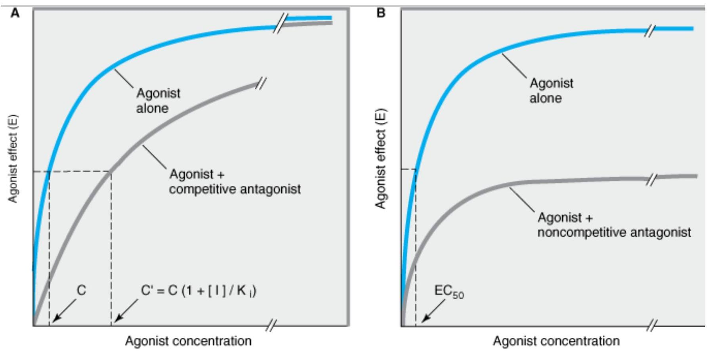Copyright ©2006 by The McGraw-Hill Companies, Inc. All rights reserved.
Changes in agonist concentration-effect curves produced by a competitive antagonist (Panel A ) or by an irreversible antago। (Panel B ). In the presence of a competitive antagonist, higher concentrations of agonist are required to produce a given eff thus the agonist concentration ( $\mathrm{C}^{\prime}$ ) required for a given effect in the presence of concentration [ 1 ] of an antagonist is shifted the right, as shown. High agonist concentrations can overcome inhibition by a competitive antagonist. This is not the case w an irreversible (or noncompetitive) antagonist, which reduces the maximal effect the agonist can achieve, although it may nc change its $\mathrm{EC}_{50}$.
The concentration ( $\mathrm{C}^{\prime}$ ) of an agonist required to produce a given effect in the presence of a fixed concentration ([I]) of competitive antagonist is greater than the agonist concentration (C) required to produce the same effec in the absence of the antagonist. The ratio of these two agonist concentrations (the "dose ratio") is related to tr dissociation constant ( $\mathrm{K}_{\mathrm{i}}$ ) of the antagonist by the Schild equation:
Pharmacologists often use this relation to determine the $K_{i}$ of a competitive antagonist. Even without knowledg of the relationship between agonist occupancy of the receptor and response, the $K_{i}$ can be determined simply a accurately. As shown in Figure 2-3, concentration response curves are obtained in the presence and in the absence of a fixed concentration of competitive antagonist; comparison of the agonist concentrations required $t$ produce identical degrees of pharmacologic effect in the two situations reveals the antagonist's $\mathrm{K}_{\mathrm{i}}$. If $\mathrm{C}^{\prime}$ is twice C, for example, then [I] = $\mathrm{K}_{\mathrm{i}}$.
For the clinician, this mathematical relation has two important therapeutic implications:
- (1) The degree of inhibition produced by a competitive antagonist depends on the concentration of antagonist. Different patients receiving a fixed dose of propranolol, for example, exhibit a wide range of plasma concentrations, owing to differences in clearance of the drug. As a result, the effects of a fixed dose of this competitive antagonist of norepinephrine may vary widely in patients, and the dose must be adjusted accordin!.
- (2) Clinical response to a competitive antagonist depends on the concentration of agonist that is competing for binding to receptors. Here also propranolol provides a useful example: When this competitive B-adrenoceptor antagonist is administered in doses sufficient to block the effect of basal levels of the neurotransmitter norepinephrine, resting heart rate is decreased. However, the increase in release of norepinephrine and epinephrine that occurs with exercise, postural changes, or emotional stress may suffice to overcome competiti antagonism by propranolol and increase heart rate, and thereby can influence therapeutic response.
Some receptor antagonists bind to the receptor in an irreversible or nearly irreversible fashion, either by form a covalent bond with the receptor or by binding so tightly that, for practical purposes, the receptor is unavailab for binding of agonist. After occupancy of some proportion of receptors by such an antagonist, the number of remaining unoccupied receptors may be too low for the agonist (even at high concentrations) to elicit a respons comparable to the previous maximal response (Figure 2-3B). If spare receptors are present, however, a lower dose of an irreversible antagonist may leave enough receptors unoccupied to allow achievement of maximum response to agonist, although a higher agonist concentration will be required (Figures 2-2B and C ; see Receptc Effector Coupling and Spare Receptors, above).
Therapeutically, irreversible antagonists present distinctive advantages and disadvantages. Once the irreversibl antagonist has occupied the receptor, it need not be present in unbound form to inhibit agonist responses. Consequently, the duration of action of such an irreversible antagonist is relatively independent of its own rate elimination and more dependent on the rate of turnover of receptor molecules.
Phenoxybenzamine, an irreversible a catecholamines released from pheochromocytoma, a tumor of the adrenal medulla. If administration of phenoxybenzamine lowers blood pressure, blockade will be maintained even when the tumor episodically releas very large amounts of catecholamine. In this case, the ability to prevent responses to varying and high concentrations of agonist is a therapeutic advantage. If overdose occurs, however, a real problem may arise. If the adrenoceptor blockade cannot be overcome, excess effects of the drug must be antagonized "physiologically," ie, by using a pressor agent that does not act via areceptors.
Antagonists can function noncompetitively in a different way; that is, by binding to a site on the receptor protei separate from the agonist binding site and thereby preventing receptor activation without blocking agonist binding. Although these drugs act noncompetitively, their actions are reversible if they do not bind covalently. Some drugs, often called allosteric modulators, bind to a separate site on the receptor protein and alter recept function without inactivating the receptor. For example, benzodiazepines bind noncompetitively to ion channels activated by the neurotransmitter $\gamma$-aminobutyric acid (GABA), enhancing the net activating effect of GABA on channel conductance.
Partial Agonists
Based on the maximal pharmacologic response that occurs when all receptors are occupied, agonists can be divided into two classes: partial agonists produce a lower response, at full receptor occupancy, than do full agonists. Partial agonists produce concentration-effect curves that resemble those observed with full agonists the presence of an antagonist that irreversibly blocks some of the receptor sites (compare Figures 2-2 [curve [ and 2-4B). It is important to emphasize that the failure of partial agonists to produce a maximal response is nc due to decreased affinity for binding to receptors. Indeed, a partial agonist's inability to cause a maximal pharmacologic response, even when present at high concentrations that saturate binding to all receptors, is indicated by the fact that partial agonists competitively inhibit the responses produced by full agonists (Figure 2-4C). Many drugs used clinically as antagonists are in fact weak partial agonists.
![Figure 2-4. Dose-response characteristics of full and partial agonists. Panel A shows the percentage of receptor occupancy by a full agonist decreasing as a partial agonist concentration increases, illustrating competition. Panel B shows that when each drug is used alone, the partial agonist produces a lower maximal response than the full agonist. Panel C shows that when used together, the total response decreases as the partial agonist displaces the full agonist, reaching the partial agonist's maximal response.](../assets/images/2025_05_20_5077f6d5de5c97219fafg-0034-1.jpg)
Panel A: The percentage of receptor occupancy resulting from full agonist (present at a single concentration) binding to receptors in the presence of increasing concentrations of a partial agonist. Because the full agonist (filled squares) and the partial agonist (open squares) compete to bind to the same receptor sites, when occupancy by the partial agonist increases, binding of the full agonist decreases. Panel B: When each of the two drugs is used alone and response is measured, occupar of all the receptors by the partial agonist produces a lower maximal response than does similar occupancy by the full agonist Panel C: Simultaneous treatment with a single concentration of full agonist and increasing concentrations of the partial agon produces the response patterns shown in the bottom panel. The fractional response caused by a single high concentration oi the full agonist (filled squares) decreases as increasing concentrations of the partial agonist compete to bind to the receptor with increasing success; at the same time the portion of the response caused by the partial agonist (open squares) increase: while the total response—ie, the sum of responses to the two drugs (filled triangles)—gradually decreases, eventually reachil the value produced by partial agonist alone (compare panel B).
Other Mechanisms of Drug Antagonism
Not all of the mechanisms of antagonism involve interactions of drugs or endogenous ligands at a single type of receptor, and some types of antagonism do not involve a receptor at all. For example, protamine, a protein tha positively charged at physiologic pH, can be used clinically to counteract the effects of heparin, an anticoagulan that is negatively charged; in this case, one drug acts as a chemical antagonist of the other simply by ionic binding that makes the other drug unavailable for interactions with proteins involved in blood clotting.
Another type of antagonism is physiologic antagonism between endogenous regulatory pathways mediated k different receptors. For example, several catabolic actions of the glucocorticoid hormones lead to increased bloc sugar, an effect that is physiologically opposed by insulin. Although glucocorticoids and insulin act on quite disti receptor-effector systems, the clinician must sometimes administer insulin to oppose the hyperglycemic effects a glucocorticoid hormone, whether the latter is elevated by endogenous synthesis (eg, a tumor of the adrenal cortex) or as a result of glucocorticoid therapy.
In general, use of a drug as a physiologic antagonist produces effects that are less specific and less easy to control than are the effects of a receptor-specific antagonist. Thus, for example, to treat bradycardia caused by increased release of acetylcholine from vagus nerve endings, the physician could use isoproterenol, a Badrenoceptor agonist that increases heart rate by mimicking sympathetic stimulation of the heart. However, us of this physiologic antagonist would be less rational—and potentially more dangerous—than would use of a receptor-specific antagonist such as atropine (a competitive antagonist at the receptors at which acetylcholine slows heart rate).
SIGNALI NG MECHANISMS & DRUG ACTION
Until now we have considered receptor interactions and drug effects in terms of equations and concentrationeffect curves. We must also understand the molecular mechanisms by which a drug acts. Such understanding allows us to ask basic questions with important clinical implications:
- Why do some drugs produce effects that persist for minutes, hours, or even days after the drug is no longer present?
- Why do responses to other drugs diminish rapidly with prolonged or repeated administration?
- How do cellular mechanisms for amplifying external chemical signals explain the phenomenon of spar. receptors?
- Why do chemically similar drugs often exhibit extraordinary selectivity in their actions?
- Do these mechanisms provide targets for developing new drugs?
Most transmembrane signaling is accomplished by a small number of different molecular mechanisms. Each typ of mechanism has been adapted, through the evolution of distinctive protein families, to transduce many differ signals. These protein families include receptors on the cell surface and within the cell, as well as enzymes and other components that generate, amplify, coordinate, and terminate postreceptor signaling by chemical second messengers in the cytoplasm. This section first discusses the mechanisms for carrying chemical information across the plasma membrane and then outlines key features of cytoplasmic second messengers.
Five basic mechanisms of transmembrane signaling are well understood (Figure 2-5). Each uses a different strategy to circumvent the barrier posed by the lipid bilayer of the plasma membrane. These strategies use (1) lipid-soluble ligand that crosses the membrane and acts on an intracellular receptor; (2) a transmembrane receptor protein whose intracellular enzymatic activity is allosterically regulated by a ligand that binds to a site the protein's extracellular domain; (3) a transmembrane receptor that binds and stimulates a protein tyrosine kinase; (4) a ligand-gated transmembrane ion channel that can be induced to open or close by the binding of a ligand; or (5) a transmembrane receptor protein that stimulates a GTP-binding signal transducer protein (G protein), which in turn modulates production of an intracellular second messenger.
![Figure 2-5. Known transmembrane signaling mechanisms. Figure shows five diagrams illustrating different ways chemical signals cross or interact with the plasma membrane. 1. Lipid-soluble signal enters cell and binds intracellular receptor (enzyme or transcription regulator). 2. Extracellular signal binds transmembrane protein activating intracellular enzyme domain. 3. Extracellular signal binds transmembrane receptor activating bound tyrosine kinase. 4. Extracellular signal binds ligand-gated ion channel, opening or closing it. 5. Extracellular signal binds cell-surface receptor linked to effector enzyme by a G protein.](../assets/images/2025_05_20_5077f6d5de5c97219fafg-0036-1.jpg)
Copyright ©2006 by The McGraw-Hill Companies, Inc. All rights reserved.
Known transmembrane signaling mechanisms: 1: A lipid-soluble chemical signal crosses the plasma membrane and acts on intracellular receptor (which may be an enzyme or a regulator of gene transcription); 2: the signal binds to the extracellular domain of a transmembrane protein, thereby activating an enzymatic activity of its cytoplasmic domain; 3: the signal binds 1 the extracellular domain of a transmembrane receptor bound to a protein tyrosine kinase, which it activates; 4: the signal bi to and directly regulates the opening of an ion channel; 5: the signal binds to a cell-surface receptor linked to an effector enzyme by a G protein. (A, C, substrates; B, D, products; R, receptor; G, G protein; E, effector [enzyme or ion channel]; Y, tyrosine; P, phosphate.)
While the five established mechanisms do not account for all the chemical signals conveyed across cell membranes, they do transduce many of the most important signals exploited in pharmacotherapy.
Intracellular Receptors for Lipid-Soluble Agents
Several biologic ligands are sufficiently lipid-soluble to cross the plasma membrane and act on intracellular receptors. One class of such ligands includes steroids (corticosteroids, mineralocorticoids, sex steroids, vitamin D), and thyroid hormone, whose receptors stimulate the transcription of genes by binding to specific DNA sequences near the gene whose expression is to be regulated. Many of the target DNA sequences (called response elements) have been identified.
These "gene-active" receptors belong to a protein family that evolved from a common precursor. Dissection of 1 receptors by recombinant DNA techniques has provided insights into their molecular mechanism. For example, binding of glucocorticoid hormone to its normal receptor protein relieves an inhibitory constraint on the transcription-stimulating activity of the protein. Figure 2-6 schematically depicts the molecular mechanism of glucocorticoid action: In the absence of hormone, the receptor is bound to hsp90, a protein that appears to prevent normal folding of several structural domains of the receptor. Binding of hormone to the ligand-binding domain triggers release of hsp90. This allows the DNA-binding and transcription-activating domains of the receptor to fold into their functionally active conformations, so that the activated receptor can initiate transcript of target genes.
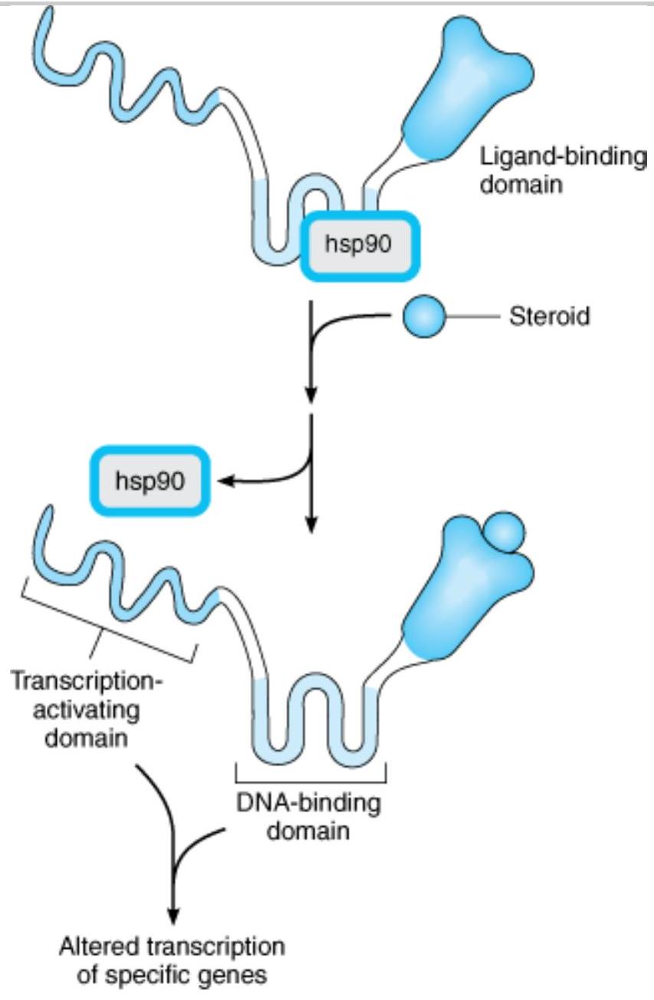Copyright ©2006 by The McGraw-Hill Companies, Inc. All rights reserved.
Mechanism of glucocorticoid action. The glucocorticoid receptor polypeptide is schematically depicted as a protein with three distinct domains. A heat-shock protein, hsp90, binds to the receptor in the absence of hormone and prevents folding into thr active conformation of the receptor. Binding of a hormone ligand (steroid) causes dissociation of the hsp90 stabilizer and permits conversion to the active configuration.
The mechanism used by hormones that act by regulating gene expression has two therapeutically important consequences:
- (1) All of these hormones produce their effects after a characteristic lag period of 30 minutes to several hours—the time required for the synthesis of new proteins. This means that the gene-active hormones cannot I expected to alter a pathologic state within minutes (eg, glucocorticoids will not immediately relieve the sympto of acute bronchial asthma).
- (2) The effects of these agents can persist for hours or days after the agonist concentration has been reduced $t$ zero. The persistence of effect is primarily due to the relatively slow turnover of most enzymes and proteins, which can remain active in cells for hours or days after they have been synthesized. Consequently, it means th. the beneficial (or toxic) effects of a gene-active hormone will usually decrease slowly when administration of th hormone is stopped.
Ligand-Regulated Transmembrane Enzymes I ncluding Receptor Tyrosine Kinases
This class of receptor molecules mediates the first steps in signaling by insulin, epidermal growth factor (EGF), platelet-derived growth factor (PDGF), atrial natriuretic peptide (ANP), transforming growth factor-B (TGF-B), a many other trophic hormones. These receptors are polypeptides consisting of an extracellular hormone-binding domain and a cytoplasmic enzyme domain, which may be a protein tyrosine kinase, a serine kinase, or a guany cyclase (Figure 2-7). In all these receptors, the two domains are connected by a hydrophobic segment of the polypeptide that crosses the lipid bilayer of the plasma membrane.
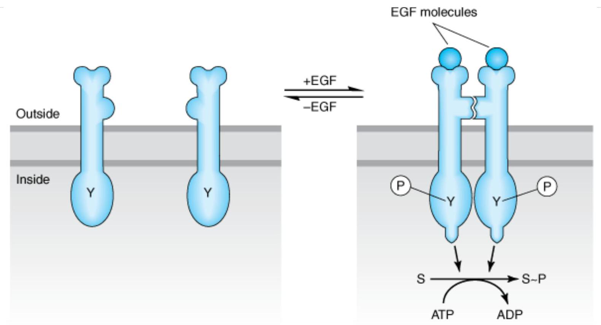Copyright ©2006 by The McGraw-Hill Companies, Inc. All rights reserved.
Mechanism of activation of the epidermal growth factor (EGF) receptor, a representative receptor tyrosine kinase. The recep polypeptide has extracellular and cytoplasmic domains, depicted above and below the plasma membrane. Upon binding of E( (circle), the receptor converts from its inactive monomeric state (left) to an active dimeric state (right), in which two receptc polypeptides bind noncovalently. The cytoplasmic domains become phosphorylated ( P ) on specific tyrosine residues ( Y ) and their enzymatic activities are activated, catalyzing phosphorylation of substrate proteins (S).
The receptor tyrosine kinase signaling pathway begins with binding of ligand, typically a polypeptide hormone o growth factor, to the receptor's extracellular domain. The resulting change in receptor conformation causes receptor molecules to bind to one another, which in turn brings together the tyrosine kinase domains, which become enzymatically active, and phosphorylate one another as well as additional downstream signaling protei। Activated receptors catalyze phosphorylation of tyrosine residues on different target signaling proteins, thereby allowing a single type of activated receptor to modulate a number of biochemical processes.
Insulin, for example, uses a single class of receptors to trigger increased uptake of glucose and amino acids, ar to regulate metabolism of glycogen and triglycerides in the cell. Similarly, each of the growth factors initiates in specific target cells a complex program of cellular events ranging from altered membrane transport of ions and metabolites to changes in the expression of many genes. Inhibitors of receptor tyrosine kinases are finding increased use in neoplastic disorders where excessive growth factor signaling is often involved. Some of these inhibitors are monoclonal antibodies (eg, trastuzumab, cetuximab), which bind to the extracellular domain of a particular receptor and interfere with binding of growth factor. Other inhibitors are membrane-permeant "small molecule" chemicals (eg, gefitinib, erlotinib), which inhibit the receptor's kinase activity in the cytoplasm.
The intensity and duration of action of EGF, PDGF, and other agents that act via receptor tyrosine kinases are limited by a process called receptor down-regulation. Ligand binding often induces accelerated endocytosis of receptors from the cell surface, followed by the degradation of those receptors (and their bound ligands). Wher this process occurs at a rate faster than de novo synthesis of receptors, the total number of cell-surface receptı is reduced (down-regulated) and the cell's responsiveness to ligand is correspondingly diminished. A well- understood example is the EGF receptor tyrosine kinase, which undergoes rapid endocytosis and is trafficked tc lysosomes after EGF binding; genetic mutations that interfere with this process cause excessive growth factor-induced cell proliferation and are associated with an increased susceptibility to certain types of cancer. Endocytosis of other receptor tyrosine kinases, most notably receptors for nerve growth factor, serves a very different function. Internalized nerve growth factor receptors are not rapidly degraded and are translocated in endocytic vesicles from the distal axon, where receptors are activated by nerve growth factor released from the innervated tissue, to the cell body. In the cell body the growth factor signal is transduced to transcription factor regulating the expression of genes controlling cell survival. This process effectively transports a critical survival signal from its site of release to its site of signaling effect, and does so over a remarkably long distance—more than 1 meter in certain sensory neurons. A number of regulators of growth and differentiation, including TGF-B, act on another class of transmembrane receptor enzymes that phosphorylate serine and threonine residues. AN an important regulator of blood volume and vascular tone, acts on a transmembrane receptor whose intracellul domain, a guanylyl cyclase, generates cGMP (see below). Receptors in both groups, like the receptor tyrosine kinases, are active in their dimeric forms.
Cytokine Receptors
Cytokine receptors respond to a heterogeneous group of peptide ligands that includes growth hormone, erythropoietin, several kinds of interferon, and other regulators of growth and differentiation. These receptors $\iota$ a mechanism (Figure 2-8) closely resembling that of receptor tyrosine kinases, except that in this case, the protein tyrosine kinase activity is not intrinsic to the receptor molecule. Instead, a separate protein tyrosine kinase, from the Janus-kinase (JAK) family, binds noncovalently to the receptor. As in the case of the EGFreceptor, cytokine receptors dimerize after they bind the activating ligand, allowing the bound JAKs to become activated and to phosphorylate tyrosine residues on the receptor. Tyrosine phosphates on the receptor then set motion a complex signaling dance by binding another set of proteins, called STATs (signal transducers and activators of transcription). The bound STATs are themselves phosphorylated by the JAKs, two STAT molecules dimerize (attaching to one another's tyrosine phosphates), and finally the STAT/STAT dimer dissociates from th receptor and travels to the nucleus, where it regulates transcription of specific genes.
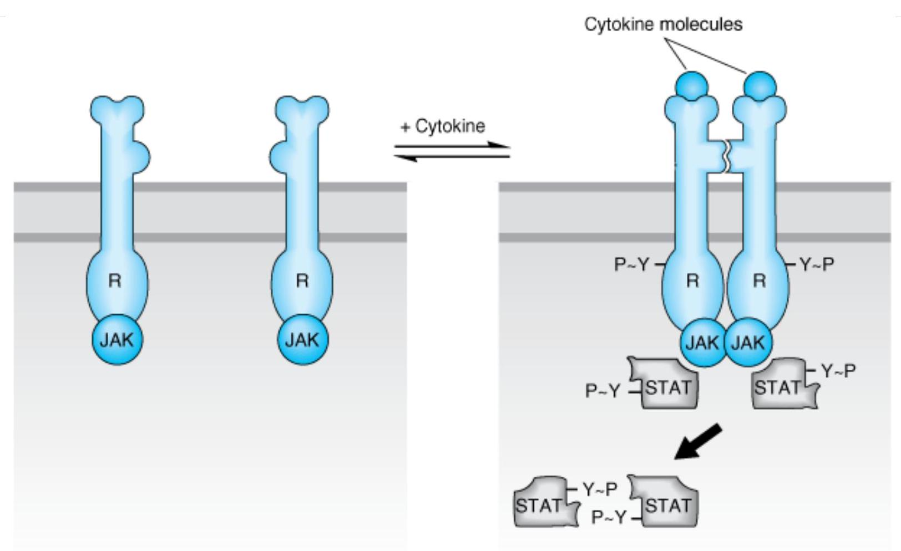Copyright ©2006 by The McGraw-Hill Companies, Inc. All rights reserved.
Cytokine receptors, like receptor tyrosine kinases, have extracellular and intracellular domains and form dimers. However, a activation by an appropriate ligand, separate mobile protein tyrosine kinase molecules (JAK) are activated, resulting in phosphorylation of signal transducers and activation of transcription (STAT) molecules. STAT dimers then travel to the nucle where they regulate transcription.
Ligand-Gated Channels
Many of the most useful drugs in clinical medicine act by mimicking or blocking the actions of endogenous ligan that regulate the flow of ions through plasma membrane channels. The natural ligands include acetylcholine, serotonin, GABA, and glutamate. All of these agents are synaptic transmitters.
Each of their receptors transmits its signal across the plasma membrane by increasing transmembrane conductance of the relevant ion and thereby altering the electrical potential across the membrane. For example acetylcholine causes the opening of the ion channel in the nicotinic acetylcholine receptor (AChR), which allows $\mathrm{Na}^{+}$to flow down its concentration gradient into cells, producing a localized excitatory postsynaptic potential—a depolarization.
The AChR (Figure 2-9) is one of the best-characterized of all cell-surface receptors for hormones or neurotransmitters. One form of this receptor is a pentamer made up of four polypeptide subunits (eg, two a.cha plus one $B$, one $\gamma$, and one $\delta$ chain, all with molecular weights ranging from 43,000 to 50,000 ). These polypeptides, each of which crosses the lipid bilayer four times, form a cylindric structure 8 nm in diameter. Wh acetylcholine binds to sites on the asubunits, a conformational change occurs that results in the transient openi of a central aqueous channel through which sodium ions penetrate from the extracellular fluid into the cell.
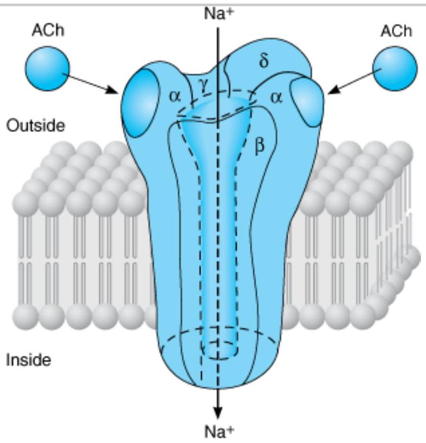Copyright ©2006 by The McGraw-Hill Companies, Inc. All rights reserved.
The nicotinic acetylcholine receptor, a ligand-gated ion channel. The receptor molecule is depicted as embedded in a rectangular piece of plasma membrane, with extracellular fluid above and cytoplasm below. Composed of five subunits (two one $B$, one $\gamma$, and one $\delta$), the receptor opens a central transmembrane ion channel when acetylcholine (ACh) binds to sites the extracellular domain of its asubunits.
The time elapsed between the binding of the agonist to a ligand-gated channel and the cellular response can of be measured in milliseconds. The rapidity of this signaling mechanism is crucially important for moment-tomoment transfer of information across synapses. Ligand-gated ion channels can be regulated by multiple mechanisms, including phosphorylation and endocytosis. In the central nervous system, these mechanisms contribute to synaptic plasticity involved in learning and memory.
G Proteins & Second Messengers
Many extracellular ligands act by increasing the intracellular concentrations of second messengers such as cycli adenosine-3',5'-monophosphate (cAMP), calcium ion, or the phosphoinositides (described below). In most case they use a transmembrane signaling system with three separate components. First, the extracellular ligand is specifically detected by a cell-surface receptor. The receptor in turn triggers the activation of a G protein locate on the cytoplasmic face of the plasma membrane. The activated G protein then changes the activity of an effec element, usually an enzyme or ion channel. This element then changes the concentration of the intracellular second messenger. For cAMP, the effector enzyme is adenylyl cyclase, a membrane protein that converts intracellular adenosine triphosphate (ATP) to cAMP. The corresponding G protein, $\mathrm{G}_{\mathrm{s}}$, stimulates adenylyl cycla: after being activated by hormones and neurotransmitters that act via specific $\mathrm{G}_{\mathrm{s}}$-coupled receptors. There are many examples of such receptors including B-adrenoceptors, glucagon receptors, thyrotropin receptors, and certain subtypes of dopamine and serotonin receptors.
$\mathrm{G}_{\mathrm{s}}$ and other G proteins use a molecular mechanism that involves binding and hydrolysis of GTP (Figure 2-10).
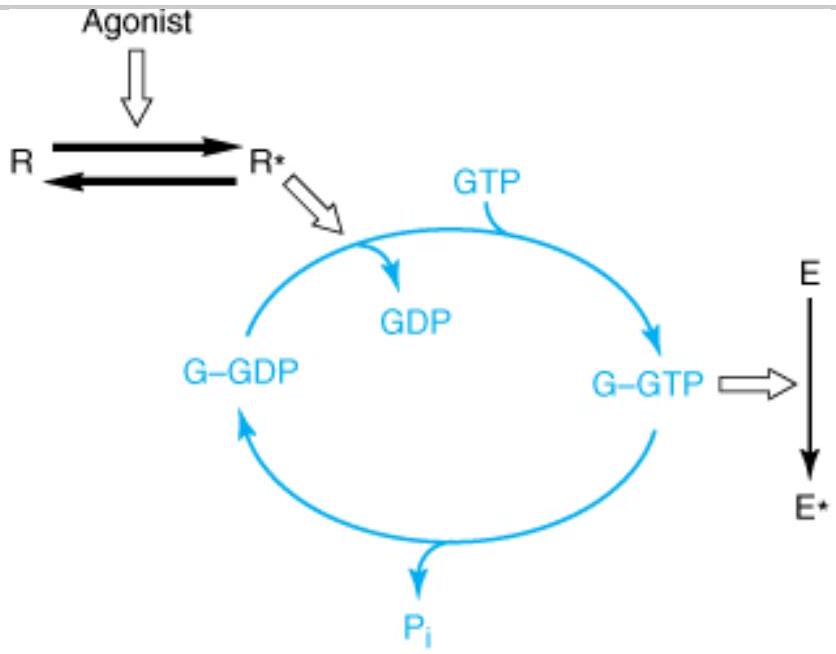Copyright ©2006 by The McGraw-Hill Companies, Inc, All rights reserved.
The guanine nucleotide-dependent activation-inactivation cycle of G proteins. The agonist activates the receptor (R $\rightarrow$ R*), wh promotes release of GDP from the G protein (G), allowing entry of GTP into the nucleotide binding site. In its GTP-bound sta (G-GTP), the G protein regulates activity of an effector enzyme or ion channel (E). The signal is terminated by hydrolysis of GTP, followed by return of the system to the basal unstimulated state. Open arrows denote regulatory effects. ( $P_{i}$, inorganic phosphate.)
This mechanism allows the transduced signal to be amplified. For example, a neurotransmitter such as norepinephrine may encounter its membrane receptor for only a few milliseconds. When the encounter generat a GTP-bound $\mathrm{G}_{\mathrm{s}}$ molecule, however, the duration of activation of adenylyl cyclase depends on the longevity of C binding to $\mathrm{G}_{\mathrm{s}}$ rather than on the receptor's affinity for norepinephrine. Indeed, like other G proteins, GTP-bound $\mathrm{G}_{\mathrm{s}}$ may remain active for tens of seconds, enormously amplifying the original signal. This mechanism also helps explain how signaling by G proteins produces the phenomenon of spare receptors (described above). The famil! of G proteins contains several functionally diverse subfamilies (Table 2-1), each of which mediates effects of a particular set of receptors to a distinctive group of effectors. Note that an endogenous ligand (eg, norepinephrir acetylcholine, serotonin, many others not listed in Table 2-1) may bind and stimulate receptors that couple to different subsets of G proteins. The apparent promiscuity of such a ligand allows it to elicit different G proteindependent responses in different cells. For instance, the body responds to danger by using catecholamines (norepinephrine and epinephrine) both to increase heart rate and to induce constriction of blood vessels in the skin, by acting on $G_{s}$ - coupled B-adrenoceptors and $G_{q}$ - coupled $\alpha_{1}$-adrenoceptors, respectively. Ligand promiscuity also offers opportunities in drug development (see Receptor Classes & Drug Development, below).
| G Protein | Receptors for: | Effector/ Signaling Pathway |
|---|---|---|
| $\mathrm{G}_{\mathrm{s}}$ | B-Adrenergic amines, glucagon, histamine, serotonin, and many other hormones | $\uparrow$ Adenylyl cyclase $\rightarrow \uparrow$ cAMP |
| $\mathrm{G}_{\mathrm{i1}}, \mathrm{G}_{\mathrm{i2}}, \mathrm{G}_{\mathrm{i3}}$ | Q2 -Adrenergic amines, acetylcholine (muscarinic), opioids, serotonin, and many others | Several, including: $\downarrow$ Adenylyl cyclase $\rightarrow \downarrow$ cAMP Open cardiac $\mathrm{K}^{+}$channels $\rightarrow$ wheart rate |
| Golf | Odorants (olfactory epithelium) | $\uparrow$ Adenylyl cyclase $\rightarrow \uparrow$ cAMP |
| Go | Neurotransmitters in brain (not yet specifically identified) | Not yet clear |
| $\mathrm{G}_{\mathrm{q}}$ | Acetylcholine (muscarinic), bombesin, serotonin ( $5-\mathrm{HT}_{1 \mathrm{C}}$ ), and many others | $\uparrow$ Phospholipase $\mathrm{C} \rightarrow \uparrow \mathrm{IP}_{3}$, diacylglycerol, cytoplasmic $\mathrm{Ca}^{2+}$ |
| $\mathrm{G}_{\mathrm{t1}}, \mathrm{G}_{\mathrm{t2}}$ | Photons (rhodopsin and color opsins in retinal rod and cone cells) | tcGMP phosphodiesterase $\rightarrow \downarrow$ cGMP (phototransduction) |
Key: cAMP = cyclic adenosine monophosphate; cGMP = cyclic guanosine monophosphate.
Receptors coupled to G proteins comprise a family of "seven-transmembrane" (7-TM) or "serpentine" receptors so called because the receptor polypeptide chain "snakes" across the plasma membrane seven times (Figure 2-11). Receptors for adrenergic amines, serotonin, acetylcholine (muscarinic but not nicotinic), many peptide hormones, odorants, and even visual receptors (in retinal rod and cone cells) all belong to the serpentine famil) All were derived from a common evolutionary precursor. Several serpentine receptors exist as dimers or larger complexes. Serpentine receptors signal by a different mechanism than receptor tyrosine kinases and cytokine receptors, however, and it is thought that dimerization is not essential for activation of many serpentine receptors.
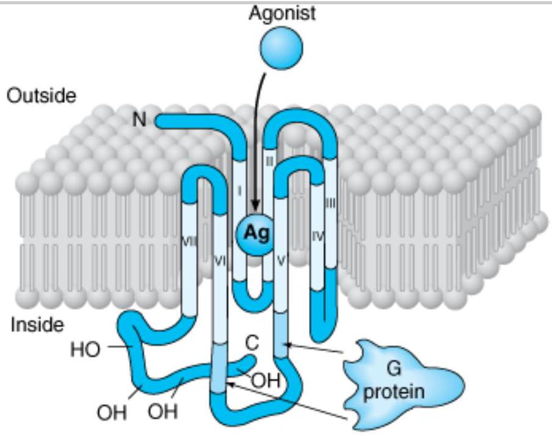Copyright ©2006 by The McGraw-Hill Companies, Inc. All rights reserved.
Transmembrane topology of a typical serpentine receptor. The receptor's amino ( N ) terminal is extracellular (above the plan the membrane), and its carboxyl (C) terminal intracellular. The terminals are connected by a polypeptide chain that traverse the plane of the membrane seven times. The hydrophobic transmembrane segments (light color) are designated by roman numerals (I-VII). The agonist (Ag) approaches the receptor from the extracellular fluid and binds to a site surrounded by th transmembrane regions of the receptor protein. G proteins interact with cytoplasmic regions of the receptor, especially with portions of the third cytoplasmic loop between transmembrane regions V and VI. The receptor's cytoplasmic terminal tail contains numerous serine and threonine residues whose hydroxyl (-OH) groups can be phosphorylated. This phosphorylatio may be associated with diminished receptor-G protein interaction.
All serpentine receptors transduce signals across the plasma membrane in essentially the same way. Often the agonist ligand—eg, a catecholamine, acetylcholine, or the photon-activated chromophore of retinal photoreceptors—is bound in a pocket enclosed by the transmembrane regions of the receptor (as in Figure 2-1 The resulting change in conformation of these regions is transmitted to cytoplasmic loops of the receptor, whick turn activate the appropriate G protein by promoting replacement of GDP by GTP, as described above. Amino acids in the third cytoplasmic loop of the serpentine receptor polypeptide are generally thought to play a key ro in mediating receptor interaction with G proteins (shown by arrows in Figure 2-11).
Receptor Regulation
G protein-mediated responses to drugs and hormonal agonists often attenuate with time (Figure 2-12, top). Af reaching an initial high level, the response (eg, cellular cAMP accumulation, $\mathrm{Na}^{+}$influx, contractility, etc) diminishes over seconds or minutes, even in the continued presence of the agonist. This "desensitization" is oft, rapidly reversible; a second exposure to agonist, if provided a few minutes after termination of the first exposu। results in a response similar to the initial response.
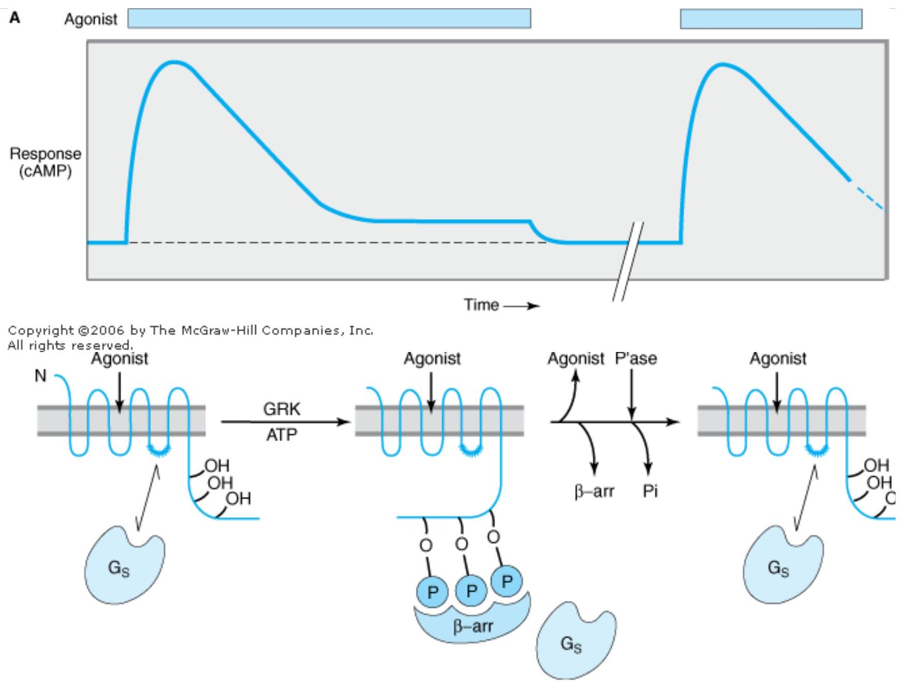 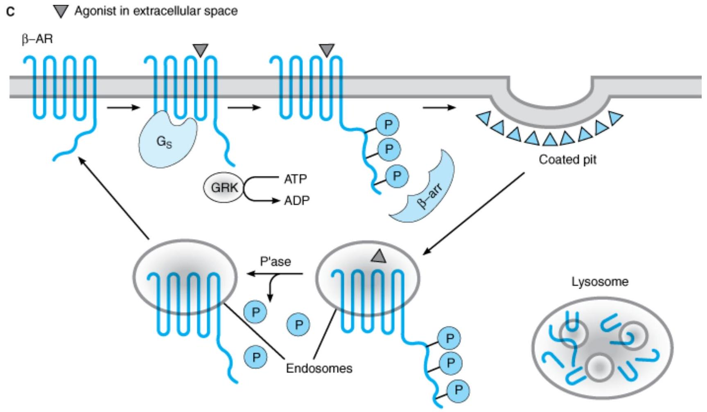Copyright ©2006 by The McGraw-Hill Companies, Inc. All rights reserved.
Rapid desensitization and longer-term down-regulation of B-adrenoceptors. Panel A: Response to a B-adrenoceptor agonist (ordinate) versus time (abscissa). Temporal duration of exposure to a constant concentration of agonist is indicated by the light-colored bar. The break in the time axis indicates passage of time in the absence of agonist. Desensitization refers to the reduced cAMP response after several minutes in the continued presence of agonist; restored response is observed after a br period (typically several more minutes) in the absence of agonist. Panel B: Agonist-induced phosphorylation (P) by a G protein-coupled receptor kinase (GRK) of carboxyl terminal hydroxyl groups (-OH) of the $\bar{B}$-adrenoceptor. This phosphorylation induces binding of a protein, B-arrestin ( B-arr), which prevents the receptor from interacting with $G_{s}$. Removal of agonist for a short period of time (on the order of several minutes) allows dissociation of B-arr, removal of phosphate (Pi) from the receptor by phosphatases (P'ase), and restoration of the receptor's normal responsiveness to agoni! Panel C: Agonist-induced endocytosis and endocytic membrane trafficking of receptors. Beta-arrestin promotes receptor binding to endocytotic structures in the plasma membrane called coated pits. After short-term agonist exposure, receptors primarily undergo dephosphorylation by phosphatases (P'ase) and recycling, promoting rapid recovery of signaling responsiveness. After longer-term agonist exposure, receptors that have undergone endocytosis traffic to lysosomes, promoting the process of receptor down-regulation.
The mechanism mediating rapid desensitization of G protein-coupled receptors often involves receptor phosphorylation, as illustrated by rapid desensitization of the B-adrenoceptor (Figure 2-12, top). The agonistinduced change in conformation of the receptor causes it to bind, activate, and serve as a substrate for a family specific receptor kinases, called G protein-coupled receptor kinases (GRKs). The activated GRK then phosphorylates serine residues in the receptor's carboxyl terminal tail. The presence of phosphoserines increasi the receptor's affinity for binding a third protein, $\beta$-arrestin. Binding of $\beta$-arrestin to cytoplasmic loops of the receptor diminishes the receptor's ability to interact with $G_{s}$, thereby reducing the agonist response (ie, stimulation of adenylyl cyclase). Upon removal of agonist, GRK activation is terminated and the desensitization process can be reversed by cellular phosphatases.
For the B-adrenoceptor, and many other serpentine receptors, B-arrestin binding also accelerates endocytosis c receptors from the plasma membrane. Endocytosis of receptors promotes their dephosphorylation, by a recept، phosphatase that is present at high concentration on endosome membranes, and receptors then return to the plasma membrane. This helps explain the ability of cells to recover receptor-mediated signaling responsiveness very efficiently after agonist-induced desensitization. Several serpentine receptors—including the B -adrenoceptı if it is persistently activated—instead traffic to lysosomes after endocytosis and are degraded. This process effectively attenuates (rather than restores) cellular responsiveness, similar to the process of down-regulation described above for the epidermal growth factor receptor. Thus, depending on the particular receptor and duration of activation, endocytosis can contribute to either rapid recovery or prolonged attenuation of cellular responsiveness (Figure 2-12).
Well-Established Second Messengers CYCLIC ADENOSINE MONOPHOSPHATE (CAMP)
Acting as an intracellular second messenger, cAMP mediates such hormonal responses as the mobilization of stored energy (the breakdown of carbohydrates in liver or triglycerides in fat cells stimulated by B-adrenomime catecholamines), conservation of water by the kidney (mediated by vasopressin), $\mathrm{Ca}^{2+}$ homeostasis (regulated parathyroid hormone), and increased rate and contractile force of heart muscle (B-adrenomimetic catecholamines). It also regulates the production of adrenal and sex steroids (in response to corticotropin or follicle-stimulating hormone), relaxation of smooth muscle, and many other endocrine and neural processes.
cAMP exerts most of its effects by stimulating cAMP-dependent protein kinases (Figure 2-13). These kinases ar composed of a cAMP-binding regulatory (R) dimer and two catalytic (C) chains. When cAMP binds to the R dime active C chains are released to diffuse through the cytoplasm and nucleus, where they transfer phosphate from ATP to appropriate substrate proteins, often enzymes. The specificity of cAMP's regulatory effects resides in the distinct protein substrates of the kinases that are expressed in different cells. For example, liver is rich in phosphorylase kinase and glycogen synthase, enzymes whose reciprocal regulation by cAMP-dependent phosphorylation governs carbohydrate storage and release.
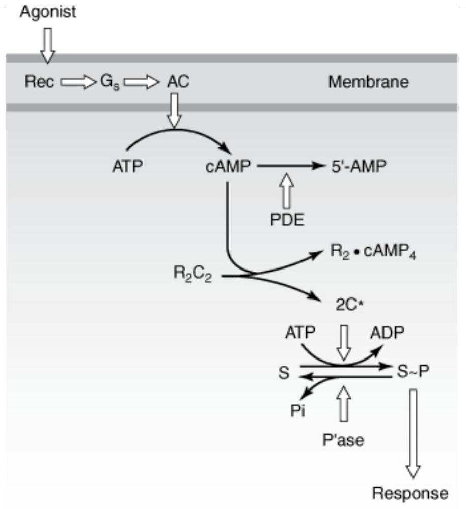Copyright ©2006 by The McGraw-Hill Companies, Inc. All rights reserved.
The cAMP second messenger pathway. Key proteins include hormone receptors (Rec), a stimulatory G protein (Gs), catalytic adenylyl cyclase (AC), phosphodiesterases (PDE) that hydrolyze cAMP, cAMP-dependent kinases, with regulatory (R) and catalytic (C) subunits, protein substrates (S) of the kinases, and phosphatases (P'ase), which remove phosphates from substrate proteins. Open arrows denote regulatory effects.
When the hormonal stimulus stops, the intracellular actions of cAMP are terminated by an elaborate series of enzymes. cAMP-stimulated phosphorylation of enzyme substrates is rapidly reversed by a diverse group of spec and nonspecific phosphatases. cAMP itself is degraded to 5'-AMP by several cyclic nucleotide phosphodiesterast (PDE, Figure 2-13). Competitive inhibition of cAMP degradation is one way caffeine, theophylline, and other methylxanthines produce their effects (see Chapter 20).
CALCIUM AND PHOSPHOINOSITIDES
Another well-studied second messenger system involves hormonal stimulation of phosphoinositide hydrolysis (Figure 2-14). Some of the hormones, neurotransmitters, and growth factors that trigger this pathway bind to receptors linked to G proteins, while others bind to receptor tyrosine kinases. In all cases, the crucial step is stimulation of a membrane enzyme, phospholipase C (PLC), which splits a minor phospholipid component of the plasma membrane, phosphatidylinositol-4,5-bisphosphate (PIP2), into two second messengers, diacylglycerol (DAG) and inositol-1,4,5-trisphosphate (IP3 or InsP ${ }_{3}$ ). Diacylglycerol is confined to the membrane where it activates a phospholipid- and calcium-sensitive protein kinase called protein kinase C. IP ${ }_{3}$ is water-soluble and diffuses through the cytoplasm to trigger release of $\mathrm{Ca}^{2+}$ from internal storage vesicles. Elevated cytoplasmic $\mathrm{Ca}^{2+}$ concentration promotes the binding of $\mathrm{Ca}^{2+}$ to the calcium-binding protein calmodulin, which regulates activities of other enzymes, including calcium-dependent protein kinases.
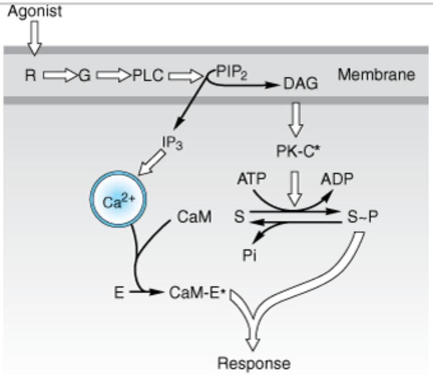Copyright ©2006 by The McGraw-Hill Companies, Inc. All rights reserved.
The $\mathrm{Ca}^{2+}$-phosphoinositide signaling pathway. Key proteins include hormone receptors (R), a G protein (G), a phosphoinositide-specific phospholipase C (PLC), protein kinase C substrates of the kinase (S), calmodulin (CaM), and calmodulin-binding enzymes (E), including kinases, phosphodiesterases, etc. (PIP2, phosphatidylinositol-4,5-bisphosphate; DAG, diacylglycerol; IP 3 , inositol trisphosphate. Asterisk denotes activated state. Open arrows denote regulatory effects.)
With its multiple second messengers and protein kinases, the phosphoinositide signaling pathway is much more complex than the cAMP pathway. For example, different cell types may contain one or more specialized calcium and calmodulin-dependent kinases with limited substrate specificity (eg, myosin light chain kinase) in addition $t$ general calcium- and calmodulin-dependent kinase that can phosphorylate a wide variety of protein substrates. Furthermore, at least nine structurally distinct types of protein kinase C have been identified.
As in the cAMP system, multiple mechanisms damp or terminate signaling by this pathway. I $P_{3}$ is inactivated by dephosphorylation; diacylglycerol is either phosphorylated to yield phosphatidic acid, which is then converted bi into phospholipids, or it is deacylated to yield arachidonic acid; $\mathrm{Ca}^{2+}$ is actively removed from the cytoplasm by $\mathrm{Ca}^{2+}$ pumps.
These and other nonreceptor elements of the calcium-phosphoinositide signaling pathway are now becoming targets for drug development. For example, the therapeutic effects of lithium ion, an established agent for treating manic-depressive disorder, may be mediated by effects on the metabolism of phosphoinositides (see Chapter 29).
CYCLIC GUANOSINE MONOPHOSPHATE (CGMP)
Unlike cAMP, the ubiquitous and versatile carrier of diverse messages, cGMP has established signaling roles in only a few cell types. In intestinal mucosa and vascular smooth muscle, the cGMP-based signal transduction mechanism closely parallels the cAMP-mediated signaling mechanism. Ligands detected by cell surface receptor stimulate membrane-bound guanylyl cyclase to produce cGMP, and cGMP acts by stimulating a cGMP-depender protein kinase. The actions of cGMP in these cells are terminated by enzymatic degradation of the cyclic nucleotide and by dephosphorylation of kinase substrates.
Increased cGMP concentration causes relaxation of vascular smooth muscle by a kinase-mediated mechanism t results in dephosphorylation of myosin light chains (Figure 12-2 ). In these smooth muscle cells, cGMP synthes can be elevated by two different transmembrane signaling mechanisms utilizing two different guanylyl cyclases. Atrial natriuretic peptide, a blood-borne peptide hormone, stimulates a transmembrane receptor by binding to i extracellular domain, thereby activating the guanylyl cyclase activity that resides in the receptor's intracellular domain. The other mechanism mediates responses to nitric oxide (NO; see Chapter 19), which is generated in vascular endothelial cells in response to natural vasodilator agents such as acetylcholine and histamine. After entering the target cell, NO binds to and activates a cytoplasmic guanylyl cyclase. A number of useful vasodilati drugs, such as nitroglycerin and sodium nitroprusside used in treating cardiac ischemia and acute hypertension act by generating or mimicking NO. Other drugs produce vasodilation by inhibiting specific phosphodiesterases, thereby interfering with the metabolic breakdown of cGMP. One such drug is sildenafil, used in treating erectile dysfunction (see Chapter 12).
Interplay among Signaling Mechanisms
The calcium-phosphoinositide and cAMP signaling pathways oppose one another in some cells and are complementary in others. For example, vasopressor agents that contract smooth muscle act by IP3-mediated mobilization of $\mathrm{Ca}^{2+}$, whereas agents that relax smooth muscle often act by elevation of cAMP. In contrast, cAr and phosphoinositide second messengers act together to stimulate glucose release from the liver.
Phosphorylation: A Common Theme
Almost all second messenger signaling involves reversible phosphorylation, which performs two principal functic in signaling: amplification and flexible regulation. In amplification, rather like GTP bound to a G protein, the attachment of a phosphoryl group to a serine, threonine, or tyrosine residue powerfully amplifies the initial regulatory signal by recording a molecular memory that the pathway has been activated; dephosphorylation erases the memory, taking a longer time to do so than is required for dissociation of an allosteric ligand. In flexible regulation, differing substrate specificities of the multiple protein kinases regulated by second messengers provide branch points in signaling pathways that may be independently regulated. In this way, cAN $\mathrm{Ca}^{2+}$, or other second messengers can use the presence or absence of particular kinases or kinase substrates produce quite different effects in different cell types. Inhibitors of protein kinases have great potential as therapeutic agents, particularly in neoplastic diseases. Trastuzumab, an antibody that antagonizes growth factc receptor signaling, was discussed earlier and is a useful therapeutic agent for breast cancer. Another example c this general approach is imatinib, a small molecule inhibitor of the cytoplasmic tyrosine kinase Abl, which is activated by growth factor signaling pathways. Imatinib appears to be very effective for treating chronic myelogenous leukemia, which is caused by a chromosomal translocation event that produces an active Bcr/Abl fusion protein in hematopoietic cells.
RECEPTOR CLASSES & DRUG DEVELOPMENT
The existence of a specific drug receptor is usually inferred from studying the structure-activity relationship a group of structurally similar congeners of the drug that mimic or antagonize its effects. Thus, if a series of related agonists exhibits identical relative potencies in producing two distinct effects, it is likely that the two effects are mediated by similar or identical receptor molecules. In addition, if identical receptors mediate both effects, a competitive antagonist will inhibit both responses with the same $K_{i}$; a second competitive antagonist will inhibit both responses with its own characteristic $K_{i}$. Thus, studies of the relation between structure and activity of a series of agonists and antagonists can identify a species of receptor that mediates a set of pharmacologic responses.
Exactly the same experimental procedure can show that observed effects of a drug are mediated by different receptors. In this case, effects mediated by different receptors may exhibit different orders of potency among agonists and different $K_{i}$ values for each competitive antagonist.
Wherever we look, evolution has created many different receptors that function to mediate responses to any individual chemical signal. In some cases, the same chemical acts on completely different structural receptor classes. For example, acetylcholine uses ligand-gated ion channels (nicotinic AChRs) to initiate a fast excitatory postsynaptic potential (EPSP) in postganglionic neurons. Acetylcholine also activates a separate class of G prote coupled receptors (muscarinic AChRs), which modulate responsiveness of the same neurons to the fast EPSP. I addition, each structural class usually includes multiple subtypes of receptor, often with significantly different signaling or regulatory properties. For example, many biogenic amines (eg, norepinephrine, acetylcholine, and serotonin) activate more than one receptor, each of which may activate a different G protein, as described abo (see also Table 2-1). The existence of multiple receptor classes and subtypes for the same endogenous ligand I created important opportunities for drug development. For example, propranolol, a selective antagonist of Badrenoceptors, can reduce an accelerated heart rate without preventing the sympathetic nervous system from causing vasoconstriction, an effect mediated by $Q_{1}$ receptors.
The principle of drug selectivity may even apply to structurally identical receptors expressed in different cells, e receptors for steroids such as estrogen (Figure 2-6). Different cell types express different accessory proteins, which interact with steroid receptors and change the functional effects of drug-receptor interaction. For exampl tamoxifen acts as an antagonist on estrogen receptors expressed in mammary tissue but as an agonist on estrogen receptors in bone. Consequently, tamoxifen may be useful not only in the treatment and prophylaxis c breast cancer but also in the prevention of osteoporosis by increasing bone density (see Chapters 40 and 42). Tamoxifen may also create complications in postmenopausal women, however, by exerting an agonist action in the uterus, stimulating endometrial cell proliferation.
New drug development is not confined to agents that act on receptors for extracellular chemical signals. Pharmaceutical chemists are now determining whether elements of signaling pathways distal to the receptors n may also serve as targets of selective and useful drugs. For example, clinically useful agents might be developed the act selectively on specific G proteins, kinases, phosphatases, or the enzymes that degrade second messengers.
Thus, the propensity of drugs to bind to different classes of receptor sites is not only a potentially vexing proble in treating patients, it also presents a continuing challenge to pharmacology and an opportunity for developing new and more useful drugs.
RELATION BETWEEN DRUG DOSE & CLI NI CAL RESPONSE
We have dealt with receptors as molecules and shown how receptors can quantitatively account for the relation between dose or concentration of a drug and pharmacologic responses, at least in an idealized system. When faced with a patient who needs treatment, the prescriber must make a choice among a variety of possible drug and devise a dosage regimen that is likely to produce maximal benefit and minimal toxicity. In order to make rational therapeutic decisions, the prescriber must understand how drug-receptor interactions underlie the relations between dose and response in patients, the nature and causes of variation in pharmacologic responsiveness, and the clinical implications of selectivity of drug action.
Dose & Response in Patients
GRADED DOSE-RESPONSE RELATIONS
To choose among drugs and to determine appropriate doses of a drug, the prescriber must know the relative pharmacologic potency and maximal efficacy of the drugs in relation to the desired therapeutic effect. The: two important terms, often confusing to students and clinicians, can be explained by referring to Figure 2-15, which depicts graded dose-response curves that relate dose of four different drugs to the magnitude of a particular therapeutic effect.
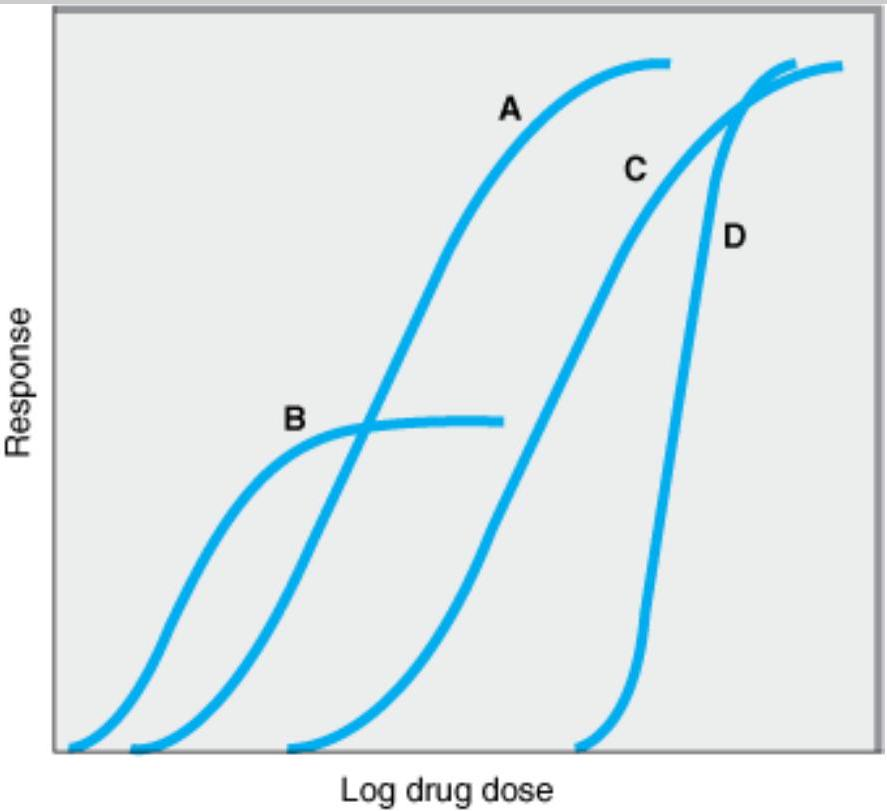Copyright ©2006 by The McGraw-Hill Companies, Inc. All rights reserved.
Graded dose-response curves for four drugs, illustrating different pharmacologic potencies and different maximal efficacies. (See text.)
Potency
Drugs A and B are said to be more potent than drugs C and D because of the relative positions of their doseresponse curves along the dose axis of Figure 2-15. Potency refers to the concentration ( $\mathrm{EC}_{50}$ ) or dose ( $\mathrm{ED}_{50}$ of a drug required to produce 50% of that drug's maximal effect. Thus, the pharmacologic potency of drug A in Figure 2-15 is less than that of drug B , a partial agonist, because the $\mathrm{EC}_{50}$ of A is greater than the $\mathrm{EC}_{50}$ of B . Potency of a drug depends in part on the affinity ( $K_{d}$ ) of receptors for binding the drug and in part on the efficiency with which drug-receptor interaction is coupled to response. Note that some doses of drug A can produce larger effects than any dose of drug B, despite the fact that we describe drug B as pharmacologically more potent. The reason for this is that drug A has a larger maximal efficacy, as described below.
For clinical use, it is important to distinguish between a drug's potency and its efficacy. The clinical effectivenes of a drug depends not on its potency ( $\mathrm{EC}_{50}$ ), but on its maximal efficacy (see below) and its ability to reach the relevant receptors. This ability can depend on its route of administration, absorption, distribution through the body, and clearance from the blood or site of action. In deciding which of two drugs to administer to a patient, prescriber must usually consider their relative effectiveness rather than their relative potency. Pharmacologic potency can largely determine the administered dose of the chosen drug.
For therapeutic purposes, the potency of a drug should be stated in dosage units, usually in terms of a particula therapeutic end point (eg, 50 mg for mild sedation, 1 mcg/kg/min for an increase in heart rate of 25 beats $/ \mathrm{min}$ Relative potency, the ratio of equi-effective doses ( 0.2, 10, etc), may be used in comparing one drug with another.
Maximal Efficacy
This parameter reflects the limit of the dose-response relation on the response axis. Drugs $A$, $C$, and $D$ in Figl 2-15 have equal maximal efficacy, while all have greater maximal efficacy than drug B. The maximal efficacy (sometimes referred to simply as efficacy) of a drug is obviously crucial for making clinical decisions when a lars response is needed. It may be determined by the drug's mode of interactions with receptors (as with partial agonists, described above)* or by characteristics of the receptor-effector system involved.
Thus, diuretics that act on one portion of the nephron may produce much greater excretion of fluid and electrolytes than diuretics that act elsewhere. In addition, the practical efficacy of a drug for achieving a therapeutic end point (eg, increased cardiac contractility) may be limited by the drug's propensity to cause a to effect (eg, fatal cardiac arrhythmia) even if the drug could otherwise produce a greater therapeutic effect.
* Note that "maximal efficacy," used in a therapeutic context, does not have exactly the same meaning the tern denotes in the more specialized context of drug-receptor interactions described earlier in this chapter. In an idealized in vitro system, efficacy denotes the relative maximal efficacy of agonists and partial agonists that act via the same receptor. In therapeutics, efficacy denotes the extent or degree of an effect that can be achieved the intact patient. Thus, therapeutic efficacy may be affected by the characteristics of a particular drug-recepto interaction, but it also depends on a host of other factors as noted in the text.
SHAPE OF DOSE-RESPONSE CURVES
While the responses depicted in curves A, B, and C of Figure 2-15 approximate the shape of a simple Michaelis. Menten relation (transformed to a logarithmic plot), some clinical responses do not. Extremely steep doseresponse curves (eg, curve D) may have important clinical consequences if the upper portion of the curve represents an undesirable extent of response (eg, coma caused by a sedative-hypnotic). Steep dose-response curves in patients can result from cooperative interactions of several different actions of a drug (eg, effects on brain, heart, and peripheral vessels, all contributing to lowering of blood pressure).
QUANTAL DOSE-EFFECT CURVES
Graded dose-response curves of the sort described above have certain limitations in their application to clinical decision making. For example, such curves may be impossible to construct if the pharmacologic response is an either-or (quantal) event, such as prevention of convulsions, arrhythmia, or death. Furthermore, the clinical relevance of a quantitative dose-response relationship in a single patient, no matter how precisely defined, mas be limited in application to other patients, owing to the great potential variability among patients in severity of disease and responsiveness to drugs.
Some of these difficulties may be avoided by determining the dose of drug required to produce a specified magnitude of effect in a large number of individual patients or experimental animals and plotting the cumulativi frequency distribution of responders versus the log dose (Figure 2-16). The specified quantal effect may be chosen on the basis of clinical relevance (eg, relief of headache) or for preservation of safety of experimental subjects (eg, using low doses of a cardiac stimulant and specifying an increase in heart rate of 20 beats $/ \mathrm{min}$ as the quantal effect), or it may be an inherently quantal event (eg, death of an experimental animal). For most drugs, the doses required to produce a specified quantal effect in individuals are lognormally distributed; that is frequency distribution of such responses plotted against the log of the dose produces a gaussian normal curve ( variation (colored area, Figure 2-16). When these responses are summated, the resulting cumulative frequenc! distribution constitutes a quantal dose-effect curve (or dose-percent curve) of the proportion or percentage of individuals who exhibit the effect plotted as a function of log dose (Figure 2-16).
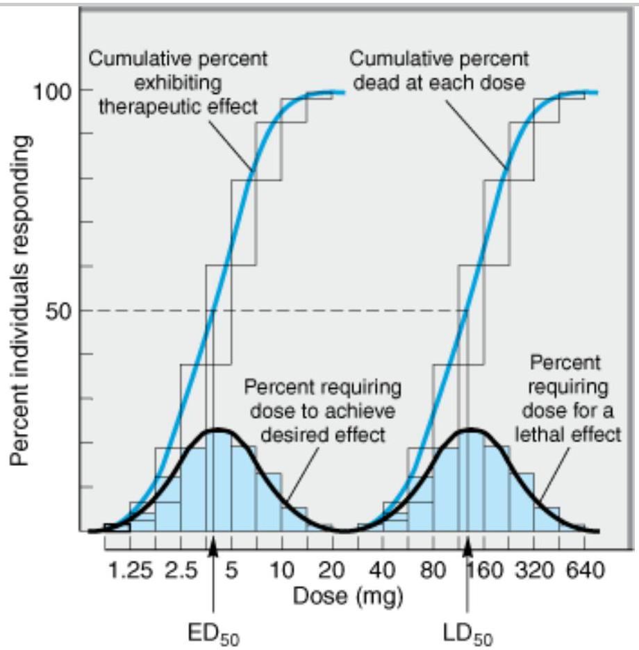Copyright ©2006 by The McGraw-Hill Companies, Inc. All rights reserved.
Quantal dose-effect plots. Shaded boxes (and the accompanying black curves) indicate the frequency distribution of doses 0 . drug required to produce a specified effect; that is, the percentage of animals that required a particular dose to exhibit the effect. The open boxes (and the corresponding colored curves) indicate the cumulative frequency distribution of responses, which are lognormally distributed.
The quantal dose-effect curve is often characterized by stating the median effective dose ( $\mathbf{ED}_{\mathbf{50}}$ ), the dose $i$ which 50% of individuals exhibit the specified quantal effect. (Note that the abbreviation $\mathrm{ED}_{50}$ has a different meaning in this context from its meaning in relation to graded dose-effect curves, described above.) Similarly, dose required to produce a particular toxic effect in 50% of animals is called the median toxic dose (TD $\mathbf{50}$ ). I the toxic effect is death of the animal, a median lethal dose ( $\mathbf{L} \mathbf{D}_{\mathbf{5 0}}$ ) may be experimentally defined. Such values provide a convenient way of comparing the potencies of drugs in experimental and clinical settings: Thus the $\mathrm{ED}_{50} \mathrm{~s}$ of two drugs for producing a specified quantal effect are 5 and 500 mg , respectively, then the first drug can be said to be 100 times more potent than the second for that particular effect. Similarly, one can obta a valuable index of the selectivity of a drug's action by comparing its ED50s for two different quantal effects in a population (eg, cough suppression versus sedation for opioid drugs).
Quantal dose-effect curves may also be used to generate information regarding the margin of safety to be expected from a particular drug used to produce a specified effect. One measure, which relates the dose of a di required to produce a desired effect to that which produces an undesired effect, is the therapeutic index. In animal studies, the therapeutic index is usually defined as the ratio of the $\mathrm{TD}_{50}$ to the $\mathrm{ED}_{50}$ for some therapeutically relevant effect. The precision possible in animal experiments may make it useful to use such a therapeutic index to estimate the potential benefit of a drug in humans. Of course, the therapeutic index of a d/ in humans is almost never known with real precision; instead, drug trials and accumulated clinical experience often reveal a range of usually effective doses and a different (but sometimes overlapping) range of possibly to doses. The clinically acceptable risk of toxicity depends critically on the severity of the disease being treated. Fc example, the dose range that provides relief from an ordinary headache in the great majority of patients shoulc be very much lower than the dose range that produces serious toxicity, even if the toxicity occurs in a small minority of patients. However, for treatment of a lethal disease such as Hodgkin's lymphoma, the acceptable difference between therapeutic and toxic doses may be smaller.
Finally, note that the quantal dose-effect curve and the graded dose-response curve summarize somewhat different sets of information, although both appear sigmoid in shape on a semilogarithmic plot (compare Figure: 2-15 and 2-16). Critical information required for making rational therapeutic decisions can be obtained from ec type of curve. Both curves provide information regarding the potency and selectivity of drugs; the graded do: response curve indicates the maximal efficacy of a drug, and the quantal dose-effect curve indicates the potential variability of responsiveness among individuals.
Variation in Drug Responsiveness
Individuals may vary considerably in their responsiveness to a drug; indeed, a single individual may respond differently to the same drug at different times during the course of treatment. Occasionally, individuals exhibit i unusual or idiosyncratic drug response, one that is infrequently observed in most patients. The idiosyncratic responses are usually caused by genetic differences in metabolism of the drug or by immunologic mechanisms, including allergic reactions.
Quantitative variations in drug response are in general more common and more clinically important. An individu patient is hyporeactive or hyperreactive to a drug in that the intensity of effect of a given dose of drug is diminished or increased in comparison to the effect seen in most individuals. (Note: The term hypersensitivit usually refers to allergic or other immunologic responses to drugs.) With some drugs, the intensity of response a given dose may change during the course of therapy; in these cases, responsiveness usually decreases as a consequence of continued drug administration, producing a state of relative tolerance to the drug's effects. When responsiveness diminishes rapidly after administration of a drug, the response is said to be subject to tachyphylaxis.
Even before administering the first dose of a drug, the prescriber should consider factors that may help in predicting the direction and extent of possible variations in responsiveness. These include the propensity of a particular drug to produce tolerance or tachyphylaxis as well as the effects of age, sex, body size, disease state genetic factors, and simultaneous administration of other drugs.
Four general mechanisms may contribute to variation in drug responsiveness among patients or within an individual patient at different times.
ALTERATION IN CONCENTRATION OF DRUG THAT REACHES THE RECEPTOR
Patients may differ in the rate of absorption of a drug, in distributing it through body compartments, or in cleari the drug from the blood (see Chapter 3). By altering the concentration of drug that reaches relevant receptors, such pharmacokinetic differences may alter the clinical response. Some differences can be predicted on the bas of age, weight, sex, disease state, liver and kidney function, and by testing specifically for genetic differences tl may result from inheritance of a functionally distinctive complement of drug-metabolizing enzymes (see Chapte 3 and 4). Another important mechanism influencing drug availability is active transport of drug from the cytoplasm, mediated by a family of membrane transporters encoded by the so-called multidrug resistance (MDI genes. For example, up-regulation of MDR gene-encoded transporter expression is a major mechanism by whic tumor cells develop resistance to anticancer drugs.
VARIATION IN CONCENTRATION OF AN ENDOGENOUS RECEPTOR LIGAND
This mechanism contributes greatly to variability in responses to pharmacologic antagonists. Thus, propranolol, B-adrenoceptor antagonist, will markedly slow the heart rate of a patient whose endogenous catecholamines ar elevated (as in pheochromocytoma) but will not affect the resting heart rate of a well-trained marathon runner. partial agonist may exhibit even more dramatically different responses: Saralasin, a weak partial agonist at angiotensin II receptors, lowers blood pressure in patients with hypertension caused by increased angiotensin I production and raises blood pressure in patients who produce small amounts of angiotensin.
ALTERATIONS IN NUMBER OR FUNCTION OF RECEPTORS
Experimental studies have documented changes in drug responsiveness caused by increases or decreases in th number of receptor sites or by alterations in the efficiency of coupling of receptors to distal effector mechanism In some cases, the change in receptor number is caused by other hormones; for example, thyroid hormones increase both the number of Breceptors in rat heart muscle and cardiac sensitivity to catecholamines. Similar changes probably contribute to the tachycardia of thyrotoxicosis in patients and may account for the usefulness propranolol, a B-adrenoceptor antagonist, in ameliorating symptoms of this disease.
In other cases, the agonist ligand itself induces a decrease in the number (eg, down-regulation) or coupling efficiency (eg, desensitization) of its receptors. These mechanisms (discussed above, under Signaling Mechanis & Drug Actions) may contribute to two clinically important phenomena: first, tachyphylaxis or tolerance to the effects of some drugs (eg, biogenic amines and their congeners), and second, the "overshoot" phenomena that follow withdrawal of certain drugs. These phenomena can occur with either agonists or antagonists. An antagor may increase the number of receptors in a critical cell or tissue by preventing down-regulation caused by an endogenous agonist. When the antagonist is withdrawn, the elevated number of receptors can produce an exaggerated response to physiologic concentrations of agonist. Potentially disastrous withdrawal symptoms can result for the opposite reason when administration of an agonist drug is discontinued. In this situation, the number of receptors, which has been decreased by drug-induced down-regulation, is too low for endogenous agonist to produce effective stimulation. For example, the withdrawal of clonidine (a drug whose $a_{2}$-adrenocep agonist activity reduces blood pressure) can produce hypertensive crisis, probably because the drug downregulates $\alpha_{2}$-adrenoceptors (see Chapter 11).
Genetic factors also can play an important role in altering the number or function of specific receptors. For example, a specific genetic variant of the 2 c -adrenoceptor—when inherited together with a specific variant of the $a_{1}$-adrenoceptor—confers increased risk for developing heart failure, which may be reduced by early intervention using antagonist drugs. The identification of such genetic factors, part of the rapidly developing fiel of pharmacogenetics, holds promise for clinical diagnosis and in the future may help physicians design the mosi appropriate pharmacologic therapy for individual patients. Another interesting example of genetic effects on dri response is seen in the treatment of cancers involving excessive growth factor signaling. Somatic mutations affecting the tyrosine kinase domain of the epidermal growth factor receptor confer enhanced sensitivity to kinc inhibitors such as gefitinib in certain lung cancers. This effect enhances the antineoplastic effect of the drug anc because the somatic mutation is specific to the tumor and not present in the host, the therapeutic index of thes drugs can be significantly enhanced in patients whose tumors harbor such somatic mutations.
CHANGES IN COMPONENTS OF RESPONSE DISTAL TO THE RECEPTOR
Although a drug initiates its actions by binding to receptors, the response observed in a patient depends on the functional integrity of biochemical processes in the responding cell and physiologic regulation by interacting org systems. Clinically, changes in these postreceptor processes represent the largest and most important class of mechanisms that cause variation in responsiveness to drug therapy.
Before initiating therapy with a drug, the prescriber should be aware of patient characteristics that may limit th clinical response. These characteristics include the age and general health of the patient and—most importantly—the severity and pathophysiologic mechanism of the disease. The most important potential cause failure to achieve a satisfactory response is that the diagnosis is wrong or physiologically incomplete. Drug therapy will always be most successful when it is accurately directed at the pathophysiologic mechanism responsible for the disease.
When the diagnosis is correct and the drug is appropriate, an unsatisfactory therapeutic response can often be traced to compensatory mechanisms in the patient that respond to and oppose the beneficial effects of the druc Compensatory increases in sympathetic nervous tone and fluid retention by the kidney, for example, can contribute to tolerance to antihypertensive effects of a vasodilator drug. In such cases, additional drugs may be required to achieve a useful therapeutic result.
Clinical Selectivity: Beneficial versus Toxic Effects of Drugs
Although we classify drugs according to their principal actions, it is clear that no drug causes only a single, spec effect. Why is this so? It is exceedingly unlikely that any kind of drug molecule will bind to only a single type of receptor molecule, if only because the number of potential receptors in every patient is astronomically large. Ev if the chemical structure of a drug allowed it to bind to only one kind of receptor, the biochemical processes controlled by such receptors would take place in multiple cell types and would be coupled to many other biochemical functions; as a result, the patient and the prescriber would probably perceive more than one drug effect. Accordingly, drugs are only selective —rather than specific—in their actions, because they bind to one or few types of receptor more tightly than to others and because these receptors control discrete processes that result in distinct effects.
It is only because of their selectivity that drugs are useful in clinical medicine. Selectivity can be measured by comparing binding affinities of a drug to different receptors or by comparing $\mathrm{ED}_{50} \mathrm{~s}$ for different effects of a dru in vivo. In drug development and in clinical medicine, selectivity is usually considered by separating effects into two categories: beneficial or therapeutic effects versus toxic effects. Pharmaceutical advertisements and prescribers occasionally use the term side effect, implying that the effect in question is insignificant or occurs a pathway that is to one side of the principal action of the drug; such implications are frequently erroneous.
BENEFICIAL AND TOXIC EFFECTS MEDIATED BY THE SAME RECEPTOR-EFFECTOR MECHANISM
Much of the serious drug toxicity in clinical practice represents a direct pharmacologic extension of the therapel actions of the drug. In some of these cases (eg, bleeding caused by anticoagulant therapy; hypoglycemic coma due to insulin), toxicity may be avoided by judicious management of the dose of drug administered, guided by careful monitoring of effect (measurements of blood coagulation or serum glucose) and aided by ancillary measures (avoiding tissue trauma that may lead to hemorrhage; regulation of carbohydrate intake). In still oth cases, the toxicity may be avoided by not administering the drug at all, if the therapeutic indication is weak or i other therapy is available.
In certain situations, a drug is clearly necessary and beneficial but produces unacceptable toxicity when given it doses that produce optimal benefit. In such situations, it may be necessary to add another drug to the treatme regimen. In treating hypertension, for example, administration of a second drug often allows the prescriber to reduce the dose and toxicity of the first drug (see Chapter 11).
BENEFICIAL AND TOXIC EFFECTS MEDIATED BY IDENTICAL RECEPTORS BUT IN DIFFERENT TISSUE OR BY DIFFERENT EFFECTOR PATHWAYS
Many drugs produce both their desired effects and adverse effects by acting on a single receptor type in differe tissues. Examples discussed in this book include: digitalis glycosides, which act by inhibiting $\mathrm{Na}^{+} / \mathrm{K}^{+}$ATPase in cell membranes; methotrexate, which inhibits the enzyme dihydrofolate reductase; and glucocorticoid hormone
Three therapeutic strategies are used to avoid or mitigate this sort of toxicity. First, the drug should always be administered at the lowest dose that produces acceptable benefit. Second, adjunctive drugs that act through different receptor mechanisms and produce different toxicities may allow lowering the dose of the first drug, thi limiting its toxicity (eg, use of other immunosuppressive agents added to glucocorticoids in treating inflammato disorders). Third, selectivity of the drug's actions may be increased by manipulating the concentrations of drug available to receptors in different parts of the body, for example, by aerosol administration of a glucocorticoid t the bronchi in asthma.
BENEFICIAL AND TOXIC EFFECTS MEDIATED BY DIFFERENT TYPES OF RECEPTORS
Therapeutic advantages resulting from new chemical entities with improved receptor selectivity were mentioner earlier in this chapter and are described in detail in later chapters. Such drugs include the and B-selective adrenoceptor agonists and antagonists, the $\mathrm{H}_{1}$ and $\mathrm{H}_{2}$ antihistamines, nicotinic and muscarinic blocking agents and receptor-selective steroid hormones. All of these receptors are grouped in functional families, each respons to a small class of endogenous agonists. The receptors and their associated therapeutic uses were discovered l analyzing effects of the physiologic chemical signals—catecholamines, histamine, acetylcholine, and corticosteroids.
Several other drugs were discovered by exploiting therapeutic or toxic effects of chemically similar agents observed in a clinical context. Examples include quinidine, the sulfonylureas, thiazide diuretics, tricyclic antidepressants, opioid drugs, and phenothiazine antipsychotics. Often the new agents turn out to interact with receptors for endogenous substances (eg, opioids and phenothiazines for endogenous opioid and dopamine receptors, respectively). It is likely that other new drugs will be found to do so in the future, perhaps leading to the discovery of new classes of receptors and endogenous ligands for future drug development.
Thus, the propensity of drugs to bind to different classes of receptor sites is not only a potentially vexing proble in treating patients, it also presents a continuing challenge to pharmacology and an opportunity for developing new and more useful drugs.
REFERENCES
- Aaronson DS, Horvath CM: A road map for those who know JAK-STAT. Science 2002; 296: 1653. [PMID: 12040185]
- Arteaga CL, Moulder SL, Yakes FM: HER (erbB) tyrosine kinase inhibitors in the treatment of breast cancer. Sen Oncol 2002;29:4. [PMID: 12138392]
- Berridge MJ, Bootman MD, Roderick HL: Calcium signalling: Dynamics, homeostasis and remodelling. Nat Rev N Cell Biol 2003; 4:517. [PMID: 12838335]
- Cabrera-Vera TM et al: Insights into G protein structure, function, and regulation. Endocr Rev 2003; 24: 765. [PMID: 14671004]
- Civelli O: GPCR deorphanizations: The novel, the known and the unexpected transmitters. Trends Pharmacol Sc 2005; 26: 15. [PMID: 15629200]
- Dancey JE: Predictive factors for epidermal growth factor receptor inhibitors—The bull's-eye hits the arrow. Cancer Cell 2004;5:411. [PMID: 15144948]
- Derynck R, Akhurst RJ, Balmain A: TGF-beta signaling in tumor suppression and cancer progression. Nat Genet 2001;29:117. [PMID: 11586292]
- Ginty DD, Segal RA: Retrograde neurotrophin signaling: Trk-ing along the axon. Curr Opin Neurobiol 2002;12:268. [PMID: 12049932]
- Gouaux E, MacKinnon R: Principles of selective ion transport in channels and pumps. Science 2005;310:1461. [PMID: 16322449]
- Hermiston ML et al: Reciprocal regulation of lymphocyte activation by tyrosine kinases and phosphatases. J Clin Invest 2002; 109: 9. [PMID: 11781344]
- Kenakin T: Efficacy at G-protein-coupled receptors. Nat Rev Drug Discov 2002; 1: 103. [PMID: 12120091]
- Mosesson Y, Yarden Y: Oncogenic growth factor receptors: Implications for signal transduction therapy. Semin Cancer Biol 2004;14:262. [PMID: 15219619]
- Pierce KL, Premont RT, Lefkowitz RJ: Seven-transmembrane receptors. Nat Rev Mol Cell Biol 2002; 3: 639. [PMI [ 12209124]
- Roden DM, George AL Jr: The genetic basis of variability in drug responses. Nat Rev Drug Discov 2002; 1:37. [PMID: 12119608]
- Rotella DP: Phosphodiesterase 5 inhibitors: Current status and potential applications. Nat Rev Drug Discov 2002;1:674. [PMID: 12209148]
- Small KM, McGraw DW, Liggett SB: Pharmacology and physiology of human adrenergic receptor polymorphisms Ann Rev Pharmacol Toxicol 2003;43:381. [PMID: 12540746]
- Sorkin A, von Zastrow M: Signal transduction and endocytosis—close encounters of many kinds. Nat Rev Mol Ce Biol 2002;3:600. [PMID: 12154371]
- Yoshihara HA, Scanlan TS: Selective thyroid hormone receptor modulators. Curr Top Med Chem 2003; 3:1601. [PMID: 14683517]
- Yu FH, Catterall WA: Overview of the voltage-gated sodium channel family. Genome Biol 2003; 4:207. [PMID: 12620097]